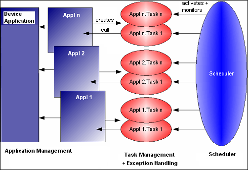

1.3.3. Application Handling¶
The CODESYS V3 runtime system is to be able to handle several applications. Each of these applications can be loaded and run independently of each other.
Each application defines one or more tasks. The tasks are processed in accordance with their properties (event-driven, time-driven, free running or driven by external events).
The tasks should behave pre-emptively if a multitasking operating system is available. The tasks for all applications are managed in a common task pool.
The time control of these tasks can either be carried out by the operating system or by the runtime system’s scheduler. This depends, for instance, on whether the operating system is capable of calling tasks cyclically with high precision.
Event-driven tasks should be run promptly and in direct response to the occurrence of the trigger; it must not be necessary to poll them cyclically. The event may be set as edge-driven or level-driven.
Two different basic scheduling procedures must be possible:
- Cyclic processing is managed by the operating system; time-slicing for freewheeling tasks is handled by the scheduler of the runtime system, as is the runtime monitoring task (watchdog), and possibly also the time-slicing.
- Cyclic processing and time-slicing are carried out by the runtime system scheduler. A version is also to be possible here in which only one task is active at a time (one task scheduling).
It must be possible optionally to select a variety of time-slicing procedures:
- External time-slicing for all tasks. Time-slicing is managed by another task outside the runtime system.
- Internal time-slicing: A slice for all the IEC tasks alternates with a slice for the rest of the system. The available execution time can in turn be assigned in time-slices to the IEC tasks.
Tasks with the same priority are handled in a round robin procedure. This means that each task gets assigned a time-slice and is activated during that time-slice. Once the time-slice has elapsed, the next task in the list will be activated. In this case, the length of a time-slice is always the schedule interval.
Watchdog handling for cyclic tasks is carried out by the runtime system scheduler. In this case, the watchdog time and the CPU usage of all the IEC tasks must be taken into account. The hardware watchdog is also managed by the scheduler.
The exception handling system must provide a defined response on all exceptions that might occur (DivByZero, Access Violation, InvalidOpcode, etc.). When an exception occurs, the PLC is halted and the call stack is determined (including in the case of an endless loop). An entry is also created in the logger at this point.
As an option, a callback can be appended in order to provide more accurate control of the behavior (abort or continue).
1.3.3.1. Overview¶
Figure 1 shows the general structure of the individual units. The four primary units of application management, task management, exception handling and the scheduler can be seen.
Application management contains all the application code and the data for all the applications, as well as the current status of each application. Each application is uniquely identified here with a name and an ID.
When an application is loaded, the application management generates the relevant IEC tasks in the task management. All the tasks from all the applications run there together.
The exception handling system is used by the task management. This has all the information needed (task, application, task context) to determine the call hierarchy through the exception component. The exception component is specific to the operating system and processor.
The scheduler carries out time control, the optional time-slicing and the watchdog management.
The advantage of this structure is its modularity. It is possible, for instance, to introduce a new scheduling procedure by exchanging the scheduler, without having to change the other components. This allows different schedulers having different features to be implemented and optionally included. This makes maintenance a good deal easier and solves one of the biggest problems of the former monolithic scheduler.
1.3.3.2. Application management¶
The application management system handles the application services to and from the programming system and the management data for all the applications, together with the current state of all the applications (Start, Stop, Reset, Exception).
The application component implements the application management precisely. It also receives services that concern an application (Login/Logout, Create/Delete, Download, Start, Stop, Reset, etc.). This involves support for a number of applications running at the same time. The component therefore registers a callback function with the server for online services of the SG_APPLICATION group.
Each application can define one or more memory areas for user code and user data. The content is then managed by the programming system.
1.3.3.3. State behavior (Start/Stop/Error)¶
The Start, Stop and Reset commands each operate on one application. A program can be started if it has been loaded and an associated application is present.
If an application has generated an exception, the application is going into Stop state. The application can then be started directly! It must be done a reset first!
1.3.3.4. Boot project¶
Once the runtime system has been initialized, an attempt is made to load the boot project. Each application has its own boot project.
The format of the boot project corresponds exactly to the download format. The same functions are therefore called to load the boot project as to download it. The content of the download message will be written into a file. This file is then available as boot project.
There are three times at which the boot project may be created:
- optionally immediately after download
- while running, when requested by the user (after online change, too!)
- Offline
These three different mechanisms to create a boot project are described below. The event indicating a successful creation is EVT_CreateBootprojectDone.
1.3.3.4.1. Create boot project at download implicitly¶
A boot project is automatically generated with the download of an application.
The CodeGUID and DataGUID are transmitted at the beginning of the download service. This is needed to avoid the repositioning on flash file systems to the beginning of the file to store these GUIDs.
1.3.3.4.2. Create boot project after online change implicitly¶
A boot project is automatically generated after the online change of an application. Here only a description of the code needed for the boot project is transferred to the target. So no complete transfer of the code is needed.
1.3.3.4.3. Create boot project on demand¶
A boot project can be created in online mode on demand via command “Create boot project for <application>”, which per default is available in the Online menu in CODESYS.
Not the complete boot project is transmitted in this case, but only a description of the used POUs of the application that is actually running on the target!
1.3.3.4.4. Create boot project offline¶
In offline mode the same command as described in _ov_kernel_application_handling (“Create boot project for <application>”) can be used to create a boot project. The boot project can be stored as a file *.app and be loaded via file transfer to the runtime system. The user will be asked whether a possibly already available compile info should be overwritten. This should be done, if the intension is to load the boot project via an external tool to the PLC (because then no further download is necessary), because: In this case the compile info of a previous download would not match to the new boot project.
Don’t forget to add this boot project to the configuration file of the runtime system (e.g. CODESYSControl.cfg). The following entry is needed:
[CmpApp]
Application.x=<Application name>.app
x stands here for an index, starting with 1.
1.3.3.5. Retain variables¶
Retained runtime system data (e.g. PLC variables) retain their value even when the controller is restarted. Two different storage procedures are distinguished here:
- storage in static memory (e.g. SRAM)
- storing the retain data in a non-volatile storage medium (such as flash memory or hard disk) when the controller is shutdown. The data is held in RAM at runtime.
The latter procedure can only be used if it can be guaranteed that, when the controller is switched off, the power supply will remain on for a certain time in order to store the retain data (e.g. by means of a UPS [1] or battery).
The management of these storage areas for retained data is located in the CmpRetain component.
This also contains the management of the static memory that assigns individually requested areas to the retain memory (e.g. one area for a PLC device application and an area for a PLC application).
Note the possibility of using SRAMemory, already mapped by another component, for retains: By setting “Retain.SRAM.AddressMapped” in section [CmpRetain] a retain area is set to the specified address without mapping this area before:
Example:
[CmpRetain]
Retain.SRAM.AddressMapped=0xABCD1234
Regard in this context that the following setting must always be specified to allow retains in SRAM:
[CmpApp]
RetainType.Applications=InSRAM
Attention
If you use the mechanism to store retain variables in SRAM, you have to configure 24 bytes less memory for the application in the target description than is physically available! These bytes are reserved at the beginning of each retain memory segment to store the data GUID of the corresponding application into the SRAM, in order to check integrity after the application has been loaded! This is necessary, because an SRAM can be moved from one controller to another and so it must be checked if the data content matches with he assigned application.
Note
Regard further settings concerning retains in the device description: RETAIN and RETAIN PERSISTENT memory
1.3.3.5.1. Consistency between Retain Data and IEC-Application¶
To guarantee the consistency between the Retain Data and the IEC-Application, at the beginning of each Retain Data Segment in the Retain Memory the runtime system stores a CRC of the layout of the Retain Data. This CRC is generated in the programming system and is download to the controller.
This CRC is calculated differentially:
Before v3.5.7.0 of the runtime system: Here we store a CRC over the complete Data Area of the Application (and not only over the Retain Data) in the Retain Memory!This means:If you change the Data Layout (e.g. adding a variable to a GVL) and make a Download/OnlineChange without creating a bootproject, at the next startup of the runtime, there is a Retain Data mismatch between the Retain Data and the Application!With v3.5.7.0 of the runtime system and later: Here we store a CRC only over the Retain Data segment in the Retain Memory. So we can detect a change in the Retain Data layout and this is not influenced by a change in the Global (volatile) Memory Area! And so a Retain mismatch should not accidentally be detected as described above.
| [1] | UPS: Uninterruptible Power Supply |
1.3.3.6. Debugging¶
If a breakpoint is set in CODESYS, the original code at the breakpoint position will be stored and a jump will be patched at this position on over this code. This has some advantages:
- no context switch necessary like on interrupt breakpoints
- no interrupt handling necessary, so it is more easy
- can be implemented on every controller
To step over a breakpoint the original code is restored before the step and then the original code is executed until the next breakpoint was reached.
In CODESYS V3 conditional breakpoints can be set, e.g. to specify the number of hit counts until the breakpoint is reached.
1.3.3.7. Download and online change¶
Downloading an application overwrites the application with the same name on the runtime system.
At Online Change, only the changed program units will be downloaded to the runtime system. These changed POUs will be downloaded in the same code area as the remaining POUs, so no special reorganization is necessary with copying remaining POUs from the old to the new buffer.
After that the copy code will be executed and the new code will be integrated in the still running application without stopping.
Attention
If you do many Online Changes with increasing POUs, a fragmentation of the code area can occur, so that an Online Change is not possible anymore! In this case only a reboot solves this problem or a full download with a cleaned up application!
1.3.3.7.1. Download¶
The following steps are processed during an application download:
- Check whether an application with the same name is already running on
the controller:
- If an application with the same name already exists:
- IEC tasks are stopped and deleted
- Breakpoints and force lists are released
- Memory areas are not released!
- Then it will be replaced by the new application
- Memory areas of the new application are checked, if they are changed in type or if they have a greater size. In one of these cases, the affected memory area is released and a new memory area with the appropriate size and type is allocated!
- If an application with the same name does _not_ exist:
- The new application object will be created
- All memory areas of the new application are allocated
- If an application with the same name already exists:
- New application is initialized and IEC tasks are created
Available download events:
- EVT_PrepareDownload
- EVT_DownloadDone
1.3.3.7.2. Online Change¶
- Modified POUs will be transferred to the controller.
- Blanking interval is searched (Time at which no IEC tasks are active any longer).
- Within the blanking interval the CopyCode gets executed and the modified code gets activated.
- POUs which are no longer used or which are obsolete or removed will be marked in the area as “deleted”, but will leave gaps. These gaps will be used by the next online change, but a segment fragmentation might result.
Available online change events:
- EVT_PrepareOnlineChange
- EVT_OnlineChangeDone
1.3.3.8. System variables for controlling critical runtime services¶
Certain commands from the programming system concerning application services on the RTS might be dangerous in a critical condition of the machine (e.g. stop application, set a breakpoint, online change or reset). They can be disabled/enabled by using the following system variables in the application program; they are properties of the “PlcOperationControl” module (component manager.library):
- xDisableApplicationOnlineChange
- xDisableApplicationDownload
- xDisableApplicationStop
- xDisableApplicationBP
- xDisableApplicationWrite (disabled via PLCHandler/IecVarAccess too!)
- xDisableApplicationForce
- xDisableApplicationReset
- xDisableAll
By default these variables are FALSE. By setting them to TRUE the corresponding runtime service gets disabled. This means it will be rejected and a message box will inform the user correspondingly.
Example:
PlcOperationControlInstance.xDIsableApplicationStop := TRUE; //disables stopping the application
Note
The use of these variables might be completely suppressed by the following entry in the RTS cfg-file:
[ComponentManager]
DisablingOperations=1
1.3.3.9. Accessing project and application information¶
In CODESYS it is possible to specify information about a project and its applications. These entries can be accessed in the runtime system.
1.3.3.9.1. Project information¶
In the project information dialog, you can specify the following entries:
- Company
- Title
- Version
- Author
- Description
These information can be extended by own entries of the type, text, number, bool and version. To make these information available in the runtime system, in the dialog there is a check box “Automatically generate POUs for property access”. If you enable this check box, a set of access functions is generated in the POU pool, so you can access this information out of the plc program.
Additionally, these access functions are available in the runtime system at the next download. In the runtime system you can use the API function AppGetProjectInformation() to get default information. To use the extended information, you can use the property access functions AppGetBooleanProperty, AppGetTextProperty, AppGetNumberProperty or AppGetVersionProperty (see [1] for details).
1.3.3.9.2. Application information¶
The information about an application can be specified in the property page of an application. Here the following entries are possible:
- Project name
- Author
- Version
- Description
- Used CODESYS Profile
- Date of last change
The entries are not extendable by the user. This information will always be downloaded to the runtime system. In the runtime system you can access this information be the API function AppGetApplicationInfo().